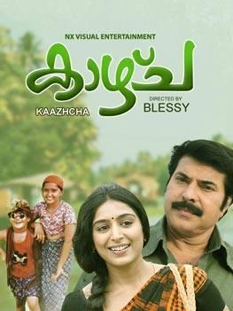

കുട്ടനാടൻ കായലിലെ - കൈതപ്രം ദാമോദരൻ നമ്പൂതരി

കുട്ടനാടൻ കായലിലെ കെട്ടു വള്ളം തുഴയുമ്പം പാട്ടൊന്നു പാടടി
കാക്കകറുമ്പി
അന്തിക്കുടം കമഴ്ത്തി ഞാൻ ഇളം കള്ള് കുടിക്കുമ്പം പഴങ്കഥ പറയടി
പുള്ളികുയിലേ പുള്ളികുയിലേ പുഞ്ചക്കിനി വെള്ളം തേവണം കള്ളികുയിലേ
തഞ്ചത്തിന് മീനും പിടിക്കണം വേമ്പനാട്ടു കായൽ തിരകൾ വിളിക്കുന്നു തക
തിമി
തിമൃതേയ് അമ്പിളിച്ചുണ്ടൻ വള്ളം കുതിക്കുന്നു തകതിമി തിമൃതേയ്
(കുട്ടനാടൻ)
കുട്ടനാടൻ കായലിലെ കെട്ടു വള്ളം തുഴയുമ്പം പാട്ടൊന്നു പാടടി
കാക്കകറുമ്പി
അന്തിക്കുടം കമഴ്ത്തി ഞാൻ ഇളം കള്ള് കുടിക്കുമ്പം പഴങ്കഥ പറയടി
പുള്ളികുയിലേ
തിര തിര തിര ചെറു തിര തുള്ളും തിര തിര തിര മറു തിര തുള്ളും
ചെറു കരയോളം.. മറു കരയോളം ..[യേ യേ യേ യേ]
തിര തിര തിര ചെറു തിര തുള്ളും തിര തിര തിര മറു തിര തുള്ളും
ചെറു കരയോളം ..
[തിമൃത തിമൃത ] മറു കരയോളം
..[തിത്തിമൃത]
ഒരു തിര തിര ഇരു തിര തിര ചെറു തിര തിര മറു തിര തിര കരയോട് തിര
മെല്ലെ
കടലിന്റെ കഥ ചൊല്ലി തിരയോട് കര മെല്ലെ മലയുടെ കഥ ചൊല്ലി അത്
പിന്നെ
മലയോട് പുഴയുടെ കഥ ചൊല്ലി അത് പിന്നെ മുകിളോട് മഴയുടെ കഥ ചൊല്ലി
കടങ്കഥകൾ
പഴങ്കഥകൾ അവയുടെ ചിറകൊരുമ്മി പദം പറഞ്ഞിനി പറന്നുയരാം
[കുട്ടനാടൻ കായലിലെ കെട്ടു വള്ളം തുഴയുമ്പം പാട്ടൊന്നു പാടടി
കാക്കകറുമ്പി അന്തിക്കുടം കമഴ്ത്തി ഞാൻ ഇളം കള്ള് കുടിക്കുമ്പം
പഴങ്കഥ
പറയടി പുള്ളികുയിലേ]
[തക തക തെയ് ]
അലകടലല അല തിര ഇളകുമ്പോൾ നുര പത നുര നുര ചിതറുമ്പോൾ
എന്തൊരു മോഹം
[തിമൃത തിമ്രിതായ് ] എന്തൊരു
ചന്തം
[യേ തിമ്രിതായ് ]
അലകടലല അല തിര ഇളകുമ്പോൾ നുര പത നുര നുര ചിതറുമ്പോൾ
എന്തൊരു മോഹം എന്തൊരു ചന്തം
തിര വിരൽ തൊട്ടു മണൽ തരി അതിൽ ഒരു നുര ചെറു പത നുര
നുര കരയിലെ മണലിനു കടലൊരു കുറി ചൊല്ലി കുറി മാനം എടുത്തൊരു തെന്നലിന്
കര നൽകി
തെന്നല്ലതു പറ പറന്നകലത്തെ മുളയുടെ കരളിന്റെ കരളിലെ കനവിന് കടം നൽകി
മുള പാടി കാറ്റാടി കടലിന്റെ കഥയെല്ലാം കാടറിഞ്ഞേ , നാടറിഞ്ഞേ
...[തകിട തകിട തകിട ]
കുട്ടനാടൻ കായലിലെ കെട്ടു വള്ളം തുഴയുമ്പം പാട്ടൊന്നു പാടടി
കാക്കകറുമ്പി
അന്തിക്കുടം കമഴ്ത്തി ഞാൻ ഇളം കള്ള് കുടിക്കുമ്പം പഴങ്കഥ പറയടി
പുള്ളികുയിലേ
പുള്ളികുയിലേ പുഞ്ചക്കിനി വെള്ളം തേവണം
കള്ളികുയിലേ തഞ്ചത്തിന് മീനും പിടിക്കണം
വേമ്പനാട്ടു കായൽ തിരകൾ വിളിക്കുന്നു തക തിമി തിമൃതേയ്
അമ്പിളിച്ചുണ്ടൻ വള്ളം കുതിക്കുന്നു തകതിമി തിമൃതേയ്
കുട്ടനാടൻ കായലിലെ കെട്ടു വള്ളം തുഴയുമ്പം പാട്ടൊന്നു പാടടി
കാക്കകറുമ്പി
അന്തിക്കുടം കമഴ്ത്തി ഞാൻ ഇളം കള്ള് കുടിക്കുമ്പം പഴങ്കഥ പറയടി
പുള്ളികുയിലേ
കുട്ടനാടൻ കായലിലെ കെട്ടു വള്ളം തുഴയുമ്പം പാട്ടൊന്നു പാടടി
കാക്കകറുമ്പി
അന്തിക്കുടം കമഴ്ത്തി ഞാൻ ഇളം കള്ള് കുടിക്കുമ്പം പഴങ്കഥ പറയടി
പുള്ളികുയിലേ